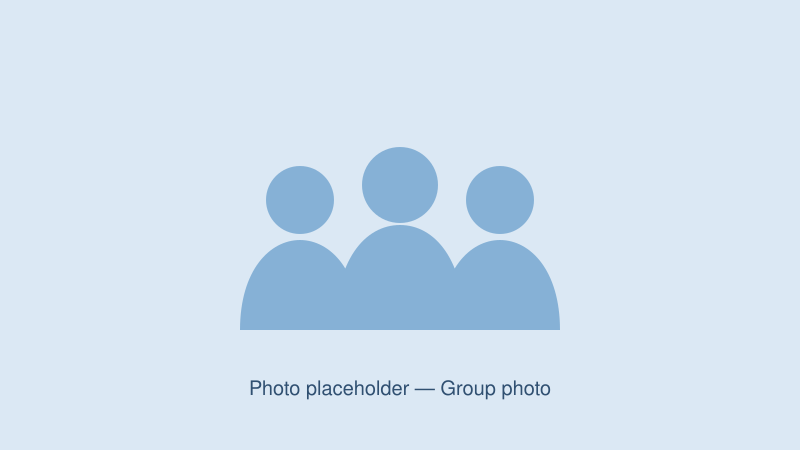
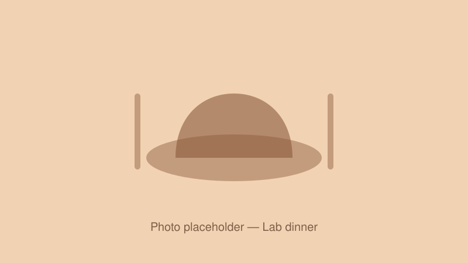

Principal Investigator
Fei Liang
Tenured Associate Professor, Ph.D. Supervisor, Principal Investigator (PI) of the Self-Powered Intelligent Flexible Sensing Group
School of Flexible Electronics, Northwestern Polytechnical University
Dr. Fei Liang is a Tenured Associate Professor and Ph.D. Supervisor at the School of Flexible Electronics, Northwestern Polytechnical University (NWPU). His research focuses on the design of self-powered flexible electronic materials and devices and their applications in health electronics, energy harvesting, and interfacial sensing for special equipment in aerospace and marine environments. He has published more than 30 papers in leading journals including Science Advances, Nature Communications, Matter, and Advanced Materials, and has co-authored one academic monograph. He leads projects funded by the National Natural Science Foundation of China (General Program and Young Scientists Fund) and serves as Chief Scientist of a Qinchuangyuan “Scientist + Engineer” team.
Experience
- Sep 2022 – presentTenured Associate Professor
Northwestern Polytechnical University - Dec 2020 – Sep 2022Postdoctoral Research Fellow
The Hong Kong Polytechnic University
Education
- Sep 2017 – Jul 2020Ph.D. in Engineering
National Center for Nanoscience and Technology, China
Projects (PI)
- National Natural Science Foundation of China — General Program
- National Natural Science Foundation of China — Young Scientists Fund
- Qinchuangyuan “Scientist + Engineer” Team Program — Chief Scientist
- Open Fund, Zhejiang Key Laboratory of Flexible Electronics
- Open Fund, Laboratory of Aerospace Entry, Deceleration and Landing Technology
- Fundamental Research Funds for the Central Universities
Projects (participant)
- National Key R&D Program of China — Key Team Member
Postdoctoral Researchers
Ph.D. Students
Master's Students
Lab Life
We work hard, and we also take time to celebrate, travel, eat and laugh together.

